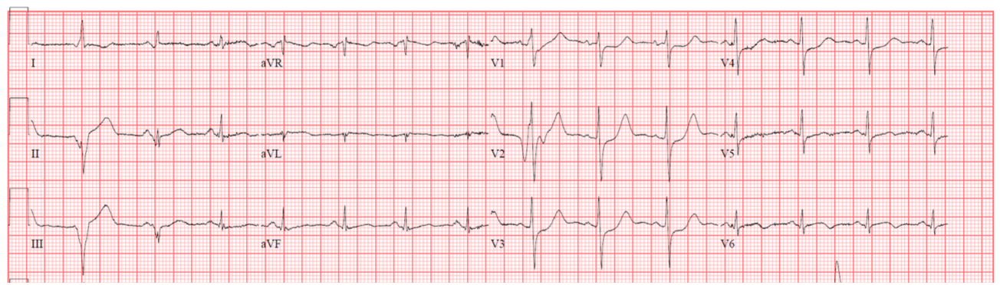
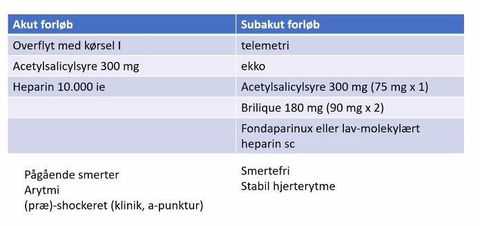
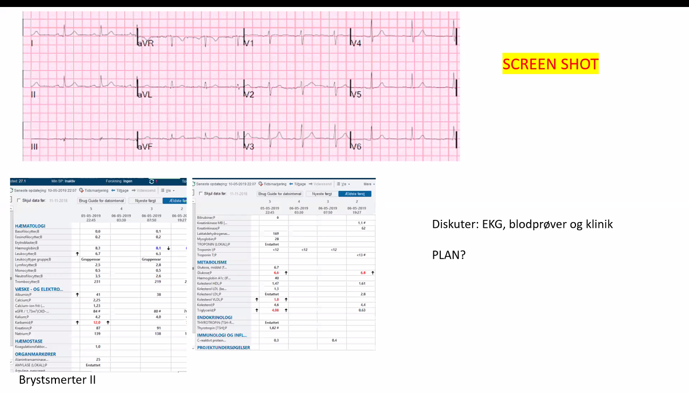
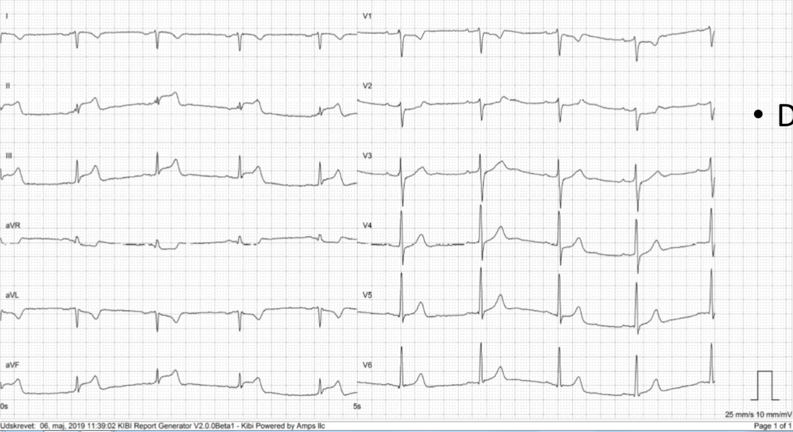
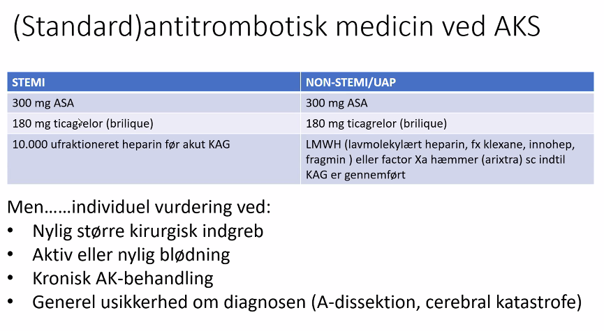
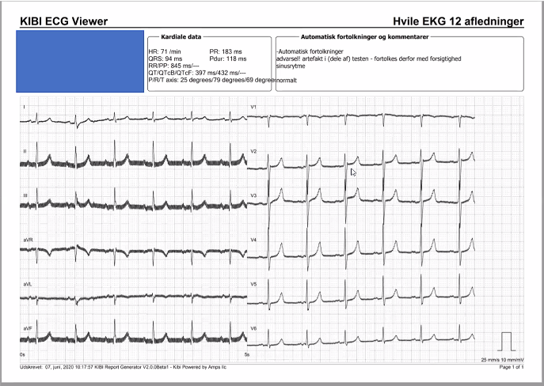
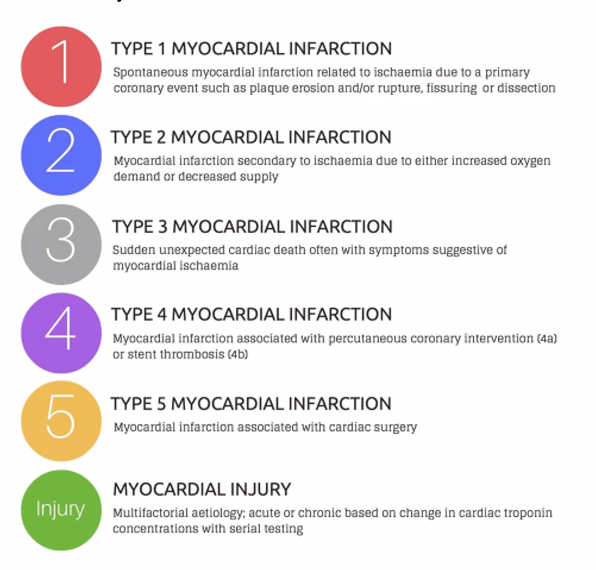
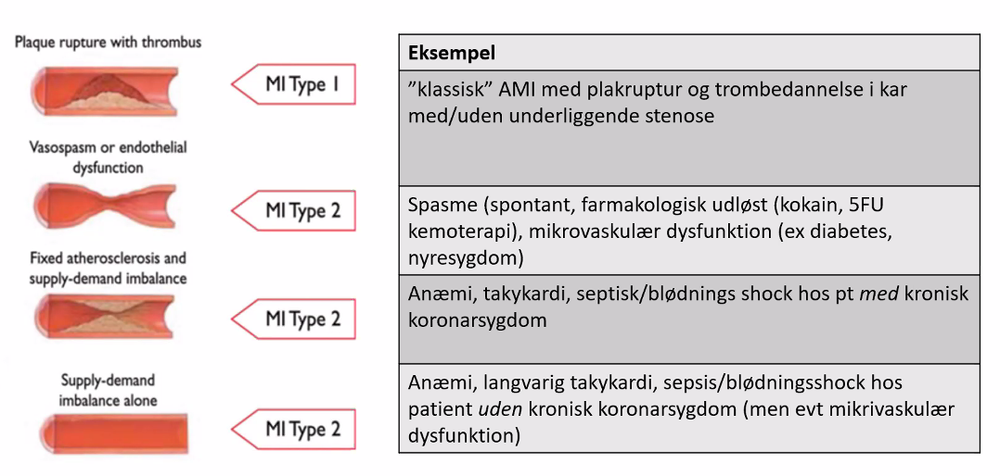

Kardiologi
Dan siger velkommen - Godmorgen dag 3
- Dan kan ikke lægge slides ud før undervisningen
- Chatten: Dan ved ikke hvad Discord er, selvom han købte sin første PC mens vi gik i børnehave
- Hvis man skriver i zoom-chatten, så svarer det til at råbe under forelæsninger
- Chatten er lukket
Introduktion
- Lene siger velkommen
- cardio.dk er netop opdaret med nye
- Start fra bunden og læs om akutte hjertesygdommme
- https://nbv.cardio.dk/akut
- Mere EKG-træning:
- life in the fastlane
- ECG-bibliotek
- litfl.com
- cases + quizes
- Derudover ABCDE-artikel fra ugeskriftet.
Til eksamen og IRL
- ABCD (hurtigt eller grundigt afh. af situationen og symptomer) + evt EKG
- Livreddende tiltag (ex. ilt, venflon til væske/blodprodukter, anæstesi)
- Plan for monitorering (telemetri, 12 afl EKG, saturation, BT, smertevurdering, a-kanyle osv) — del din plan med sygeplejersken
- Anamnese + obj. us
- Videre udredning (biokemi, billeddiagnostik)
- Arbejdsdiagnose, differentialdiagnose
Dagens program
- Synkoper / palpitationer
- Dyspnø
- Brystsmerter
- Blandet
Case 1 - Synkope I
- 37 årig mand indbringes i akutmodtagelsen efter besvimelsestilfælde
- Umiddelbare oplysninger:
- Pt sad på restaurant og spiste.
- Synker sammen og glider ned på gulvet
- Vågner efter få (?) minutter
- A: Fri vejrtrækning, normal kulør
- B: RF 12/min, egalt luftskifte, SAT 100% uden ilt
- C: BT 110/65, puls 72/min. Varm og tør
- D: vågen og klar, BS 7,4 mM, normale pupilforhold
- E: Upåfaldende udseende — ingen synlige sår eller hudforandringer, TP 37,0
- Der er nu gået ca 15 minutter siden besvimelsen — Hvad nu — se EKG på
- næste side?

- Gennemgang af EKG
- Sinusrytme. Regelmæssig, f lige under 100. smalle QRS. Ingen st-deviation
- T-takker normal.
- Normalt EKG.
Anamnese
- Hyppighed
- Forvarsel
- Palpitationer eller dyspnø før?
- Slog patieten sig?
- Relateret til anstrnegelse
- Liggendestillinge
- Risikofaktorer
BP
- Elektrolytter
- Hgb
Risikopatienter
- Der er en liste med typer af risikopatienter hvor synkope kan være udtryk for noget farligt som bør udredes nærmere. Man kan ikke huske det uden ad. Kig i vejl./instruk når disse pt udredes.
Case 2 - Synkope II
86 årig kvinde indlægges efter synkope
Pt bor i eget hjem. Får behandling for forhøjet BT men ellers ingen anden medicin, oplyser at hun har følt sig træt gennem længere tid.
Besvimer pludselig da hun sidder ved sit spisebord og løser krydsord.
Falder hen over bordet
Bruger sit nødkald da hun kommer til sig selv
A: Fri vejrtrækning,
B: RF 16/min, egalt luftskifte, SAT 100% på nasal ilt 2 liter/min
C: BT 95/45, puls 28 (uregelmæssig). Varm og tør
D: vågen og klar, BS 7,4 mM, normale pupilforhold
E: Upåfaldende udseende — ingen synlige sår eller hudforandringer, specielt ingen sår eller traumer i hoved/ansigt, Tp 36,8
- EKG -analyse:
- P-takker ikke sammen emd QRS. 3. grads AV-blok m. nodal-rytme. Negative T-takker i V1-V3.
- Lenes EKG-fifs: Kig på rytmestrimmel nederst for romer II.
- Behandling
- Skal have en pacemaker. Først en midlertidig, senere evt. permanent.
- Kan transkutantpace hvis ustabil. Isoprenalin
- Yderligere diagnostik
- Infektion? Så skal perm. PM afvente, så den ikke bliver inficeret.
- Spg:
- Negative T-takker?
- Eskapade slag har tit abnorm konfiguration
- Så dem skal man ikke fokusere så meget på.
- Negative T-takker?
Behandling (3.grads AV-blok)
- Atropin 0.5 — 1 mg i.v hver 5. min (højst 3 mg)
- Isoprenalin 0,02 - 0,2 ug/kg/min, optitreres til ønsket effekt (forsigtighed ved AMI).
- Transkutan pacing (Zoll-pacemaker) som akut behandling og som backup under transport til et pacemakerimplanterende center.
- Transvenøs pacemaker — temporær eller permanent
Case 3 - Palp/hjertebanken II
73 årig kvinde indlægges af egen læge under diagnosen ”arytmi”
Pt oplyser: fornemmelse af uroligt hjerte i 1 uge
I øvrigt helt rask — tager ingen medicin
Opsøger egen læge, der måler puls og BT samt stetoskoperer. Kan ikke tage EKG
ABCDE: Upåvirket, undt. puls 120 uregelmæssig
- EKG med AFLI. Svært med frekvens.
- HAS-BLED og CHADVAS
- Konverteres til normalrytme, men vent hvis AFLI > 48 timer, inden DC-konvertionsforsøg da trombe i atrier
- Yderligere undersøges?
- Ekko,
- IHD?
- Hypertension?
- Blodprøver (anæmi, TSH, infektion)
EKG begreber
Paroksystisk: Selvlimiterende episoder af AFLI, der i mange tilfælde varer < 2 døgn, men kan vare op til 7 døgn. AFLI episoder der konverteres indenfor 7 døgn kaldes også paroksystisk.
Persisterende: Episoder af AFLI der varer > 7 døgn inkl. episoder, der kræver konvertering for at genetablere sinusrytme.
Langvarig persisterende: AFLI der har varet > 1 år, men hvor der alligevel findes indikation for rytmekontrollerende behandling.
Permanent: AFLI hvis tilstedeværelse er accepteret, og hvor der ikke findes grundlag for yderligere forsøg på konvertering til sinusrytme.
Bemærk: Alle typer kan være førstegangstilfælde på det tidspunkt, hvor diagnosen stilles. Hvis patienten har både paroksystiske og persisterende episoder af AFLI, klassificeres tilstanden efter den hyppigst forekommende type.
Spørgsmål
- Hvorfor er det ikke en AFLA?
- Svar: Den er for uregelmæssig.
- Dan: Hvis man har en nedstryger, så er det en AFLA.?!
- Tidsgrænse for DC-konvertering. I går nænt 24, nu 28 timer.
- Svar: Det er 48 TIMER.
- Hvornår medicinsk og hvornår DC-konvertering
- Medicinsk kan man gøre hurtigt. Amiodaron og vernakalant?
- DC-konvertering hvis ej effekt..
- Forstår ikke helt..
- Fenger: EKKO? Over 48 timer. TEE,
- Man kan TEE til at udvide DC-konvertering-vindue, men man skal være erfaren UL-operatør for at kunne se tromber i atrier. Så kan man tillade DC selv efter 48 timers flimmer.
- Digoxin?
- Kan bruges til at reducere frekvens over 120. Hvor pt er generet af det.
- Betablokker skal man være forsigtig med hvis man ikke kender EF.
- Frekvensregulering, skal vi gå i dybden?
- Det går udover den akutte fase.
- Vigtigt mht AFLI
- Stille diagnosen på EKG,
- Kende 48 timers grænse for konvertering aht trombe,
- DC-konverting hvis ustabil (og anden beh. ved ustabil hæmodynamik?)
Behandling af AFLI
- Vigtigt med apopleksiforebyggelse, jo ældre, jo vigtigere.
- Takykardi kan give hjertesvigt
- Man kan ikke undvære AK-beh selvom AFLI er gået over da pt tit går tilbage.
- CHA2DV2AS > 0 (undt. kvindepoints)
Efter pause: Dyspnø
Case: Dyspnø I
- 61 årig kvinde indlagt i akutmodtagelsen af egen læge pga relativt akut opstået dyspnø og trykkende fornemmelse i brystet.
- Egen læge oplyser:
- point-of care CRP: 21 mg/L (normal < 20)
- point-of-care troponin T: 45 ng/L (normal < 20 ng/L)
- st.p:ia
- medicin: Cozaar comp 100mg/25mg (hypertension)
- FUND:
- A: Fri vejrtrækning, lettere taledyspnø
- B: RF 25/min, egalt luftskifte, SAT 100% på nasal ilt 5 liter/min
- C: BT 95/45, puls 100/min. Varm og tør, normalt kapillærrespons
- D: vågen og klar, BS 7,4 mM, normale pupilforhold
- E: Upåfaldende udseende — ingen synlige sår eller hudforandringer, TP 37,1
- Hvilke diagnostiske overvejelser vil du gøre dig og hvilke tiltag vil du sætte i værk?
- Fælles EKG-analyse:
- Rygelmæssigt,
- Smalle QRS.
- P-takker foran alle komplekser
- ST-elevationer? [Det er da ikke nok]
- Lene: En halv mm depression
- Der mangler en naboafledning
- Q-tak i ROMER 3 (bestemt en Q-tak)?
- Det er abnormt.
- V1 er ikke en Q-tak.
- S1Q3T3
- Dyb S1
- Dyb Q3
- Inverteret T i 3
- Kan være hint om lungeemboli, men hverken særlig sensitivt eller specifikt.
- Jeg tror vi mistænker en lungeemboli
- [TODO: Differentialdiagnoser?]
- Yderligere undersøgelser
- A-punktur
- Både pO og PCO2 ville være
- Laktat
- Grundigere objektiv undersøgelse
- Blodprøver
- D-dimer
- Troponiner (AKS, men også risikostratificere)
- billeddiagnostik
- Vent/Perf-scientigrafi
- CT-skanning [TODO: Det skal være en bestemt slags?]
- Lunge rtg
- A-punktur
Biokemi
- Hæmatologi
- Hæmoglobin: 8,3 mmol/l (7-10,5mmol/L)
- Leucocytter: 9,0 (3,0-8,8 mmol/L)
- Trombocytter: 108 (145-390 x10?/L)
- Væske og elektrolytter
- Natrium: 140 (137-144 mmol/L)
- Kalium: 4 (3,5-4,4 mmol/L)
- Kreatinin: 83 (60-105 mmol/L)
- eGFR: 85 (>60 mL/min)
- Hæmostase
- Fibrin D-dimer: 1,9 (<0,3)
- Organmarkører
- Troponin T: 113 (<14 ng/L)
- Wells score til sandsynlighed for LE
- Undersøgelse ved LE-mistanke
- Ekkokardiografi
- Kan udelukke andet, se høj tryk
- CT-skanning bruger man mest
- Vent / perf scint
- Kan tit ikke laves i vagten.
- UL af underekstremiteter
- Der skulle være en DVT ved 80% af LE'er.
- Ekkokardiografi
- sPESI
- Udvidet scoreskema når man har stillet LE-diagnose
- Wells til at sandsynliggøre LE
- EKSAMEN: Vide at disse eksisterer - ikke kunne dem!
- Høj: Trombolyse el. op
- Intermedier høj:
- LMH/UFH/tynde katetre direkte op i kar på RH og Aarhus + NOAK
- Intermedier-lav + lak: NOAK
Spørgsmål til LE
- Normalt at se forhøjet troponin ved LE?
- JA, normalt
- Kan ses ved mange ting pga hæmodynamisk stress
- Hvornår ringer man til PCI
- Akut hvis der er STEMI, men så længe der ikke er STEMI eller udbredt iskæmi eller brystsmerter, så led efter andre diagnoser
- Hvordan med troponiner?
- Ved AKS kigger man på forhøjelses / peak.. Nok ikke vigtigt..
Case: Dyspnø II
- 65 årig mand indlægges via vagtlæge pga udtalt dyspnø og takykardi
- Kort anamnese:
- Tiltagende funktionsdyspnø gennem måneder
- Problemer med at sove om natten
- ”tykke ben”
- Ingen brystsmerter
- FUND:
- A: besværet og rallende vejrtrækning, udtalt hviledyspnø, foretrækker siddende position
- B: RF 25/min, boblende luftskifte, SAT 87% på nasal ilt 10 liter/min
- C: BT 140/100, puls 100/min. Klam og svedende. Ingen hørbare hjertemislyde (men vanskeligt)
- D: vågen og klar, BS 7,4 mM, normale pupilforhold
- E: ingen synlige sår eller hudforandringer, betydelige ue-ødemer, Tp 37,1

Analyse af CASE
- EKG:
- Breddeøget QRS.
- Belastning?, dybe V1-V3.
- Grenblok?
- Breddeøget i alle afledninger
- Nettoareal i V1
- Negativt i V1 => Venstresidigt
- STEMI?
- Historie er ikke akut tilkommet, men over måneder.
- Ved Ve. sidigt grenblok
- svært at udtale sig om QRS
- Tent. diagnose:
- Hjerteinsufficiens
- Historie, langsom udvikling, voldsomme ødemer
- Lene: Mest sandsynlige diagnose
- Lungeemboli
- ??
- Hjerteinsufficiens
- Behandling (akut hjerteinsufficiens)
- Lejring
- Ilt (mål SAT over 92)
- Vasodilatation (nitroglycerin s.l. + nitroinfusion)
- Spray man hurtigt kan få fat i
- Diuretika
- 40 el. 80 mg furix iv
- (morfin)
- virker også vasodilaterende
- Telemetri
- Blærekateter
- Output monitorering
- A-punktur
- Fremgang i tilstand, kan holde SAT?
- Supplerende undersøgelser
- Ekkokardiografi
- Bp'er
- Rtg thorax
- (KAG / Hjerte-CT)
- Vurdering af iskæmisk sygdom
Vurdering af hjertevigt
- Våd = ødem / lungestase mener jeg hun sagde. Det er ikke klamsvedig. Det er overhydreret.
- Varm + våd => alm kard afd
- Kold + våd => intensiv? [9.54]
Case: Dyspnø III
- 30 årig mand henvist af lægevagt pga dyspnø gennem 1 måned.
- Fra journalen:
- Pt fortæller at han 24. dec stod op med vejrtrækningsbesvær om natten, men at det gik over af sig selv. Har efterfølgende oplevet dyspnø i ny og næ, været hos egen læge og opstartet AB behandling for lungebetændelse x2 siden start januar.
- Synes ikke dette har hjulpet, har stadig dyspnø.
- Forværring ved at ligge fladt.
- Pt har tidl. haft et 5-6 årig misbrug af steroider.
- A: normal
- B: RF 12/min, normalt luftskifte, SAT 100%
- C: BT 132/86, puls 110/min. Varm og tør. Ingen hjertemislyde
- D: vågen og klar, BS 7,4 mM, normale pupilforhold
- E: ingen synlige sår eller hudforandringer, ingen ødemer, ingen dyb lægømhed, Tp 36,9
- Diagnoser og diff ved egen læge
- atypisk pneumoni
- astma
- hjertesvigt
- da der ikke var effekt af ovenstående beh..
- EKG: Tegn til belastning?
- Rtg thorax med corectasi
- Ekko med elendig EF
PAUSE
Brystsmerter
- Fortæller historie om Falster.
- Pointe: Tag altid EKG ved smerter fra diagphrafma og op.
- Historie: De havde sendt en patient hjem x flere med "det er nok corona"
Case: Brystsmerter I
- 46 årig kvinde kendt med DM2, HK, arthritis urica og depression indlægges via 112 med brystsmerter
- A: Fri vejrtrækning,
- B: RF 16/min, egalt lucskice, SAT 100% uden ilt
- C: BT 105/45, puls 84. Varm og tør
- D: vågen og klar, BS 7,4 mM, normale pupilforhold, angiver smerter svarende til NRS 6
- E: Upåfaldende udseende – ingen synlige sår eller hudforandringer, normal Tp
- Yderligere anamnese:
* Kl 18:00 i går aftes (20 timer siden) oplever pt gradvis indtrængende smerter, der starter i halsen og rykker sig til midten af brystkassen. Udstråler mod ryggen og skulderne især hø. axil. Smerten er konstant men ikke trykkende, mere af brændende karakter.
- Ledsaget af kvalme, sure opstød og besværet vejrtrækning.
- Pt vælger at gå i sengen men kan ikke sove pga smerterne. VAS 8-9. Vågner kl 2:00 med svær svimmelhed og nærbesvimelse da hun skulle rejse sig, dette varer ca 1 time. Ringer efter ambulancen.
- Aldrig oplevet lignende.
- Har hostet med lidt slim i 2-3 uger.

Analyse
- Brystsmerter
- EKG
- ST-depression i prekordialafledninger
- Lene kigger efter på Q-takker. Lene: måske er der lidt Q-tak i ???
- ST-elevationer: ingen?
- Der er en ekstrasystole (første slag i I-III), så de ST-elevationer skal man ikke kigge på
- ST-depression i prekordialafledninger
- Forhøjede troponiner
- TroponinT: 5200
- Kreatininkinase: 7060
- KreatininkinaseMB: 513
- Tent diagnose: non-STEMI.
- Der er gået 20 timer fra symptomdebut!
Hvad nu?
- Pågående smerter?
- Hæmodynamik?
- Biokemi?
- Ekko?
- Overvejelse:
- STEMI over 20 timer gammelt?
- Non-STEMI?
STEMI-behandling
- Hvis man skal have effekt af hurtigt PCI, skal det være indenfor 12 timer efter debut
- Hvad man skal gøre senere er ikke dokumenteret
- Skal man lave akut eller subakut forløb?
Diskuter med PCI-center 
[TODO: 10.27 - hvornår er det subakut eller akut?]
Denne patient falder mellem to stole, og her kan man diskutere med PCI-center
I denne case besluttede man en akut overflyting. Der blev lavet PCI under KAG.
Case: Brystsmerter II
- 62 årig mand indlægges af egen læge u.d. crescendo angina
- Debut af anstrengelsesudløste angina smerter i september 2018.
- Har klaret sig med ntg-spray — har ikke ønsket henvisning.
- Igennem de sidste par uger tiltagende angina selv ved lav intensitet, er aktuelt sygemeldt pga angina. Har den sidste uge næsten ikke været uden for eget hjem, da selv det udløser smerter.
- ABCDE: Upåfaldende og smertefri ved sengeleje

- EKG normalt
- Blodprøver:
- Paraklinik rimelig normal? Ikke oplagte faresignaler
- Man kan godt vælge en non-invasiv udredning
- Man kunne lave EKKO på sygehus eller elektivt
- Man kunne overveje telemetri da han næsten har haft brystsmerter i hvile
- Tæt på at have ustabil angina
- Hjertemagnyl
- Der er ikke diagnose endnu, så det kan man overveje på risikoprofil
- Tror man på arixtra 2,5 mg sc
- ahva?
- Man lavede en KAG alligevel og der fandt man noget man kunne stente.
Egne kommentarer
Tror pointen med casen var at der var oplagt klinik med smerter ved mindste anstrengelse, men intet paraklinik der kunne give diagnose. Jeg ved ikke helt om det er nok til en ustabil angina diagnose, men det tænker jeg.
Fra LHB: Tilstanden opfattes som truende myokardieinfarkt og skal behandles som non-ST-elevations myocardieinfarkt (non-STEMI)
Fra Cardio NBV: AKS
Ustabil angina pectoris (UAP) er karakteriseret ved:
- symptomer på myokardieiskæmi opstået under hvile eller ved minimal fysisk udfoldelse
- crescendo angina pectoris med stigning i anfaldsfrekvens og varighed hos patienter med forud bestående kronisk koronart syndrom
UAP er en klinisk diagnose, som stilles på baggrund af anamnesen. Forbigående EKG-forandringer støtter diagnosen og har prognostisk betydning, men er ikke obligatoriske. Troponinværdier er ikke signifikant forhøjede, da tilstanden ellers klassificeres som NSTEMI.
Differentialdiagnoser skal overvejes, særligt ved ukarakteristiske symptomer. Det vigtigste i den akutte situation er at skelne AKS fra andre livstruende tilstande som aortadissektion, lungeemboli, pneumothorax og øvre gastrointestinale lidelser.
EFter PCI
- Magnyl + Brilique + Statin + Ekko + Rehab (KRAM-faktorer + medicin)
Case Brystsmerter III
- Du er forvagt på medicinsk afdeling på et regionshospital.
- Du bliver kaldt på akut tilsyn på ortopædkirurgisk afdeling
- Patienten, Mand 78 år, har i går gennemgået en elektiv, total knæ-alloplastik
- Pt er i øvrigt kendt med hypertension og DMII
- Pt har haft trykkende brystsmerter i 30 minutter. Afdelingen har bestilt et EKG mens de venter på dig.
- ABCD:
- A: Fri vejrtrækning, ingen taledyspnø
- B: RF 14/min, egalt luftskifte, SAT 100% på nasal ilt 5 liter/min
- C: Tp 37,1, BT 165/95, puls 100/min. Varm og let svedende
- D: vågen og klar

- EKG
- Regelmæssig rytme, smalle QRS.
- STEMI: II + III + aVF
- Bagvægsinfarkt.
- Behøver vi gøre?
- Ved klart STEMI => Konf. PCIs
- Han ligger med et knæ.?
- Blodfortyndende?
- Skal man tage troponiner?
- Lene fortæller
- Man skal være opmærksom på patienter der får STEMI på hospital
- Hgb og blødningsrisiko kan være anderledes.
- Man kan godt vente med blodfortyndende og lave KAG først.
- Konferere med læger (stamafd.) der kender/netop har behandlet patienten.
- fx netop større kirurgisk indgreb, lav hæmoglobin etc. hvor man skal være opmærksom på at give blodfortyndende.
- Dan siger man godt kan give heprain til nye knæ, det max 100 ml blødning.
- Lene svarer: men en hemikolektomi, der skal man passe på.

Spørgsmål
- nitroglycerin i fht denne patient
- Nitro virker ikke så godt hvis karret er lukket.
Case: Brystsmerter IV
- 22 årig ung mand ringer 112 pga bryst og rygsmerter.
- EKG er abnormt (se næste slide)
- Helt rask — tømrerlærling i god fysisk form
- I SP en enkelt kontakt med en akutmodtagelse for 1 år siden — intoksikeret med alkohol + kokain
- Lene gennemgår
- EKG er ikke helt normalt
- Spidste T-takker
- Biokemi
- CKMB på 27
- Troponin 390
- Kan han have AKS?
- Alder gør det meget usandsynligt
- Vi har nogle stykker i 30'erne som er familiært disponerede, men 22 er for ungt.
- Årsager til ? / diffdiagnoser?
- Kokainer (vasospam)
- Infektion
- Endokarditis -
- NEJ. protraheret forløb. ikke akut
- Diagnose: Myokarditis
- Telemetri
- Følg biomarkærer og EF, laktat på a-gas.
- Symptomatisk behandling
- Flyt til højt hvis
- Faldende EF
- Arytmi
- Klinisk ustabil
Spørgsmål
- Infektionsmarkører var normale?
- Vi kan ikke stole helt på infektionstal ifht. myokarditis
- Kardiomyopati? Ja det kan man også overveje
- Hængekøjekonfigurationer på EKG:
- Ja, det kan man godt bruge til noget, især ved serielle EKG'er.
Egne noter
- Cardio NBV
- Myokarditis = Inflammatorisk hjertemuskelsygdom betinget af betændelse i myokardiet og ledsagende kardial dysfunktion.
- Myokarditis (inflammatorisk kardiomyopati)
Pause - Sidste lektion
- Lidt kortere med opsamling
- Blandede bolcher
Case fra hjertecenter: Brystsmerter V
- 55 årig mand, tidligere sund og rask. indlægges via 112 pga. hypotension og akutte mavesmerter.
- Anamnese
- Vågner her til morgen med mavesmerter. Tager ibuprofen herfor. Går på toilettet og kvitterer stor sort afføring. Efterfølgende forværring i mavesmerter og svimmelhed, hvorfor ambulance tilkaldes.
- I ambulancen blodtryk 70/50, fået væske og rettet sig lidt på dette, dog fortsat tryk på 70/50 hvorfor der gøres akut-kald.
- Objektivt
- A: frie luftveje
- B: Sat, 100 m. 3 L nasal ilt. St.p..: uden mislyde.
- C: Initielt ustabil med systolisk blodtryk 70, rettet sig på 0,5 L i.v. væske til blodtryk 96/62, sinusrytme 62. Ekg uden iskæmi.
- a-PKT: Hgb 9,0. Laktat 3,8. Perifert kølig. Bleg.
- FAST ved K-BV: Neg. Blød i abd. Ømhed sv.t. epigastriet.
- D: Vågen og klar. BS 16,9.
- Vurd/plan
- Tentantiv diagnose: øvre Gl-blødning.
- Overflyttet til abdominalkirurgisk modtagelse til videre udredning og behandling
- Biokemi
- Hgh normal
- Leuko 16
- Neutrofile 13
- K 5,5
- ALAT 75
- Glukose 15,9

- EKG normalt
- 6 TIMER SENERE:
- Aktuelt:
- har stadigvæk smerter i brystet som også udstråler lidt til ryggen. Kardiologisk BV er kontaktet ang. EKG som mener at det ikke er tegn til AMI.
- A-gas: laktat 4,4
- Bestiller CT thorax og abdomen mhp aortadissektion og diffuse mavesmerter.
- CT-abodmen med kontrast
- aortadissektion
- hæmoperikardium
- Aortadissektion
- Sjældent
- Risikofyldt diagnose
- Hav den i baghoved
- D-dimer, troponin, ekko, evt. TEE
- CT med kontrast.
- Dan: Obskure neurologiske symptomer fordi kar er lukket af
- Aorta-dissektion symptomer
- Skarp og skærende smerter i thorax
- Bælteformede smerter (og ST-elevation)
- Synkope ved debut
- Abdominalsmerter
- Hemiplegi
- Kardissektion.
- ”Hvidt ben”
- pga dissektion ned iben
- Aorta-dissek er en blandet landhandel.
- Hav den lidt i baghovedet
- Pas på med blodfortyndende ved mistanke om A-dissektion?
Spørgsmål
- Det kan ligne STEMI.
- I den bedste verden opdager man det før KAG. Så opdager man det når man ikke kan få kateteret i kranspulsårer
- Smerterne er mere stikkende / savende og ikke elefant på bryst-agtige.
- Kan BT-forskel ml. arme hjælpe
- Ja, hvis rigtige kar er ramt, A-dissektion.
- Dan supp:
- Hvis BT er for lavt til at være sandt, flyt manchet til anden arm.
- FAST-skanning hvorfor har de ikke opdaget dissektionen?
- Kun FAST i abdomen, eFAST er lunger og perikardium
- Dissektion svært at se på Ekkokardiografi
- Der skal være hæmoperikardium og dissektion i første cm af aorta
- Tidl. 22 årige håndværker: Kunne han have haft dissektion
- Lene: Ja det kunne han godt.
- Tænk Marfan med svaghed.
- Bicuspid aortaklap har også øget risiko.
- Han var for lidt påvirket til at man fik mistanken
- Men god differentialdiagnose.
HUSK-HUSK-HUSK-HUSK-HUSK-HUSK
- Anden alvorlig sygdom v. smerter i thorax/øvre abdomen:
- AKS
- Aortadissektion
- Lungeemboli
- Perforeret Ulcus
- Pancreatitis
Nu: 5 typer myokardioinfarkt

Type II er vigtigt at kende fordi

Man vil møde disse patienter på anden afd. fx kirurgisk, pga blodtab Kroniske med nyrefunktion noget med troponin
- Hvor møder I pt. med type II infarkt ? * Efter kirurgi med blodtab (anæmi) * På nefrologisk afdeling (kronisk troponin-elevation) * Patienten, der har haft hurtig Atrieflimren * Patienten med KOL i exacabation
- Husk: ikke alle patienter har gavn af blodfortyndende behandling
- Man skal have fokus på de udløsende faktorer.
- Det er ikke nogle sjældne ting.
Spørgsmåls 20 min til lidt blandede spørgsmål
- Måske dumt spørgsmål?: Nefrologisk pt. Fordi det ikke udskilles?
- Ja, det bliver ikke udskildt, men de kan få det af dialyse hvor de bliver trukket lidt i dialyse
- Kronisk hjertesygdom ved nefro pt'er
- Nyopstået Venstresidigt grenblok med brystsmerter skal PCI-center-konfereres
- Oliva: Type II?
- De kan have lige så typiske brystsmerter.
- De har en anden form for udløsende faktorer
- Ved type I opstår det spontant - plaqueruptur.
- Ved type II er det en anden udløsende faktor - IKKE plaqueruptur
- Dan: fx. røgforgiftning fordi der ikke er nok ilt supply
- Celine: Shock. Væskebehandlet. Ikke godt fordi det var kardiogent shock. Hvordan skal man undgå det?
- Hvis BT har meget lvt BT, så giver den 200-500 ml væskebolus
- Trendelenburg
- Hvilket shock?
- Hjertestop
- Q-tak
- Fortæller om myokardie fra 6 timer til uendelig lang tid siden
- Man kan læse om Q-takker her